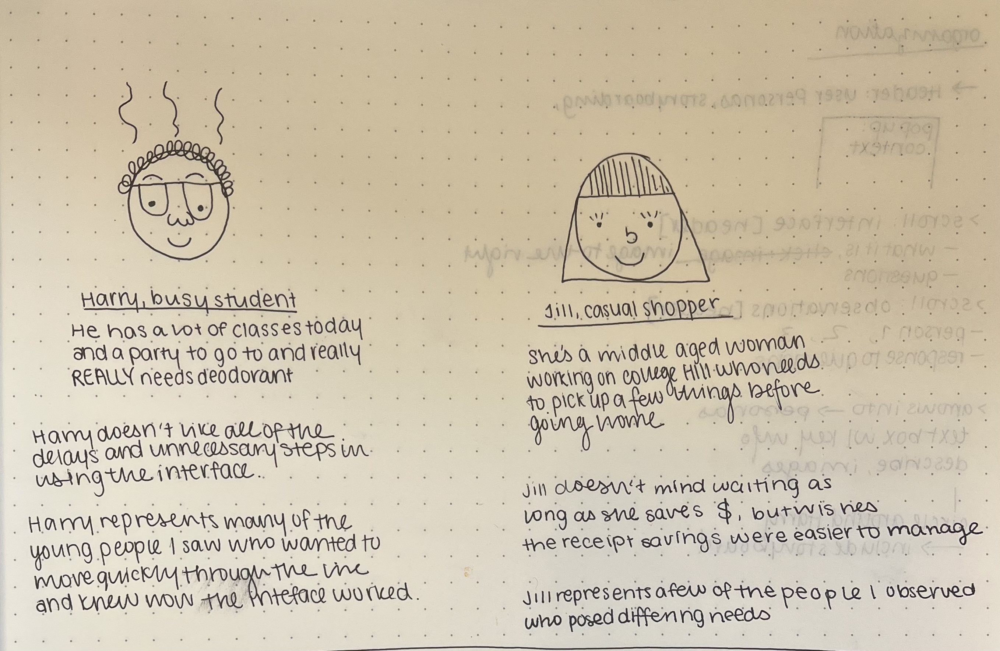
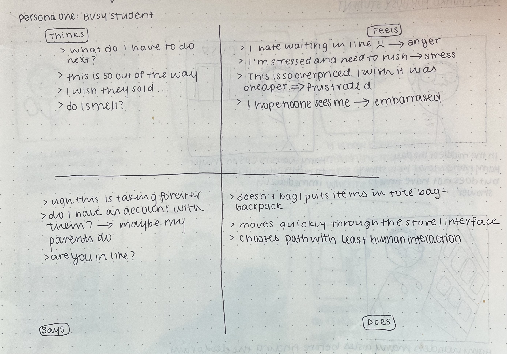
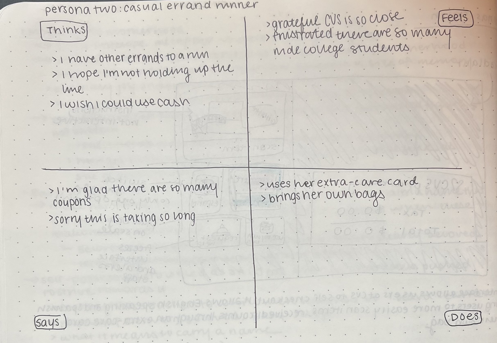
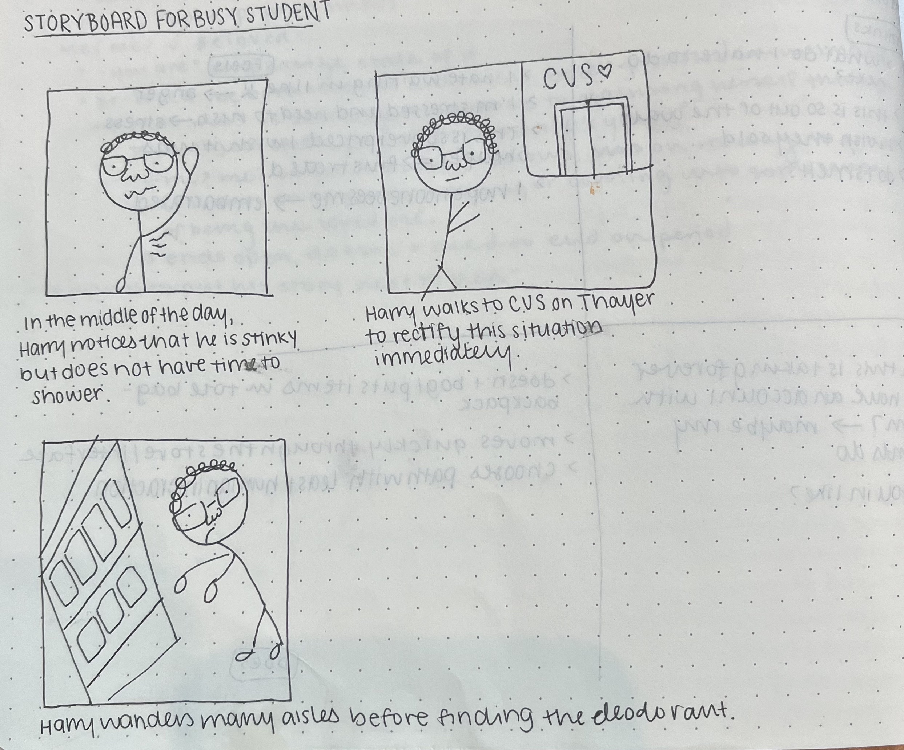
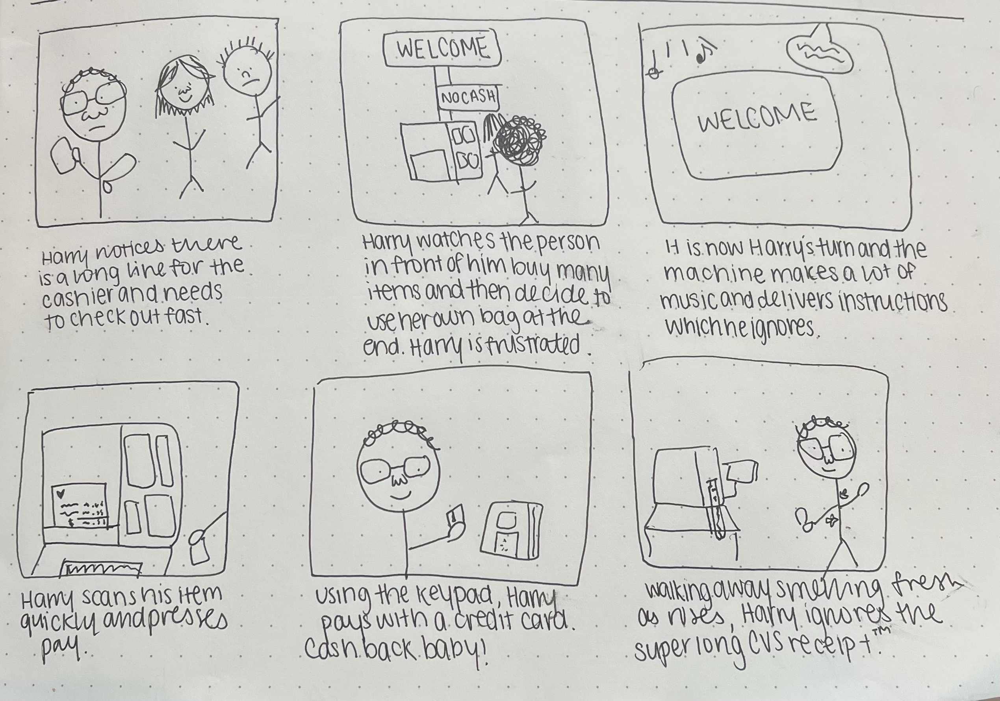

what is this?
this site uses UX personas and storyboarding to
explore how users interact with an interface, utilizing the
self-checkout at cvs as a case study.
i observed the self-checkout interface at the cvs on thayer.
this interface allows users to check out without waiting in line for the single
cashier. there is a welcome screen proceeded by a virtual receipt that appears when the user
begins scanning items. additionally, there is a card reader that allows users to pay with chip, insert
swipe, or tap. the entire console is fairly compact and involves minimal tacticle engagement for maximum efficiency.
this interface is trying to allow more users to check-out with relative speed.

i observed three people interacting with this interface:
| Person 1 |
Person 2 |
Person 3 |
| This person had many items and moved quickly through the purchasing process |
This person had only one item and seemed to be moving with haste |
This person used the phone number look up at the start of the process and seemed to be familiar with the interface |
| All of the items were of similar sizes/functions (beverages) so the scanning process was relatively smooth |
This person was very familiar with the interface so she did not await any verbal instructions |
This person set up the bag before he began scanning his items |
| This person wanted to use cash, but resorted to tap-to-pay because cash was not an option |
This person used tap to pay, but did so before the interface was ready so had to wait for a moment |
This person paid with card and waited for instructions to insert chip |
| This person scanned all of their items first and left them on the scale, then bagged them at the end of the interaction which slowed down the process |
This person didn’t bag her single item and checked out rather quickly |
This person scanned and bagged multiple items with relative ease |
the answers to the aforementioned questions have been summarized below:
| Person 1 |
Person 2 |
Person 3 |
| This person finds scanning and bagging multiple items to be un-intuitive however it was not difficult for him to learn |
She is very familiar with the interface and does not think about it visually at all, and instead interacts based on instinct (automatically start scanning, presses buttons, then taps to pay) |
He doesn’t think a lot about the buttons but imagines it would be confusing for someone who isn’t familiar because they are hard to read |
| He never uses the voiceover but does find the sound somewhat distracting |
She finds the sounds played somewhat annoying as she comes here often for quick purchases |
He ignores the voiceover though imagines it would be helpful for someone with vision impairment |
| He never asks for additional help but sometimes is forced into contact with the cashier if he is scanning cough syrup or really struggling with the scanning mechanism |
She never asks for help or needs it |
While the interface is relatively simple, he acknowledges that the various shades of blue + unhelpful images may impair the accessibility of this interface |
key takeaways:
- While this interface is not very different from most self check out options, it did seem that it rewarded people who already understood its rhythm
- Most users seem to value effiency, as they come to this CVS for quick errands often
- Most people seemed to ignore the voiceover / did not wait for its verbal instructions
- Because it was somewhat crowded, there seemed to be a general sense of annoyance at the line and perhaps interface, as it does not reward speed
from these observations, i created two personas that embody most users' needs:



with this persona, harry, i created a storyboard which encapsulates the user experience of this interface:


thank you for reading my storyboard! i hope you understand this interface a little bit better :)